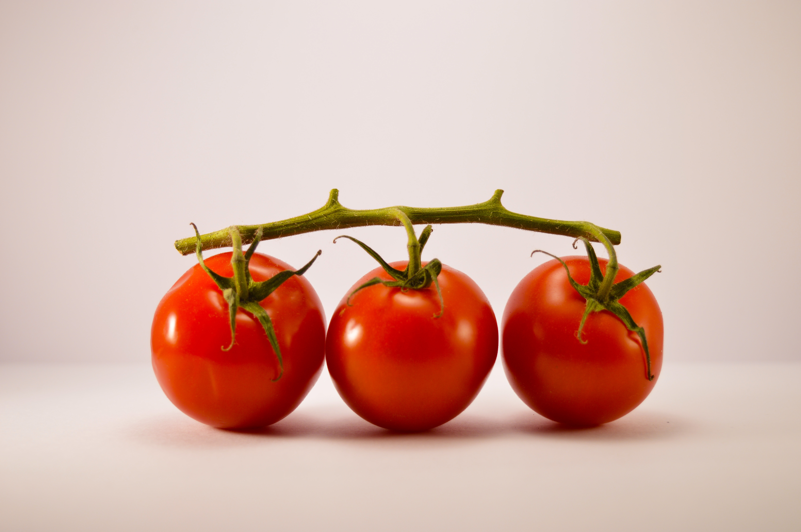

레몬
신맛으로 유명한 과일로, 히말라야가 원산지이다.
시원하고 기후의 변화가 거의 없는 환경에서 잘 자란다. 높이는 1m~1.5m 정도로 성장하고, 열매는 10월~이듬해 봄까지 수확할 수 있다.
레몬의 즙을 짜서 음료를 만들 수도 있고, 열매를 얇게 썰어 레몬청을 담그는 등 다양한 방법으로 요리할 수 있다.
(참고) Naver지식백과-레몬

방울토마토
원산지는 라틴아메리카 서부의 고원 지대로, 높이는 약 1m 정도로 성장한다.
5~8월에 꽃이 피고, 약 50일 뒤인 7~9월에 열매를 수확할 수 있고 열매의 색은 붉은색, 노란색, 초록색 등 다양하다.
일반 토마토보다 키우기 쉽고 병충해에 강하다는 특성이 있기 때문에 실내에서 기루기 적합하다.
(참고) Naver지식백과-방울토마토
완두콩
원산지는 지중해 연안으로, 높이가 약 2m 정도로 성장한다.
10월~11월에 심어 이듬해 4월~6월에 열매를 수확하는 보통 재배법, 9월에 심어 같은 해 12월~이듬해 3월에 열매를 수확하는 억제 제배법이 있다.
꽃은 흰색, 붉은색, 자주색으로 다양하고, 한 꼬투리 당 열매가 5~6개 들어있다.
(참고) Naver지식백과-완두콩
올리브
이탈리아 및 지중해 연안에서 많이 사용하는 식재료로, 주로 올리브 절임이나 올리브 오일의 형태로 음식에 활용한다.
나무의 높이는 5m~10m로 실내에서 키우기에는 너무 큰 것 같지만, 가지치기를 통해 나무의 높이를 조절할 수 있다.
올리브는 종에 따라 조금씩 차이가 있지만, 주로 가을~겨울 사이에 열매를 수확한다.
(참고) Naver지식백과-올리브